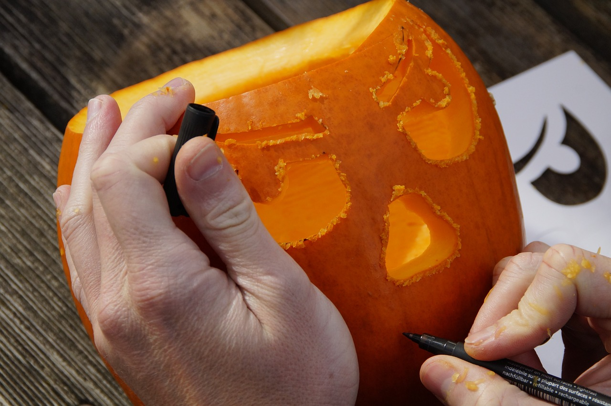

Bastelzauber
Einen Kürbis schnitzen

Was brauchen sie dafür?
Einen Kürbis
Einen Stift um zu schauen wie man schneiden muss.
Einen Messer zum schneiden
Anleitung
Wählen Sie einen Gesichtsausdruck für ihren Kürbis aus.
Zeichnen sie mit dem Stift, wie das Gesicht aussieht.
Nachdem Sie fertig geworden sind, Nehmen sie das Messer zu Hand und schneiden sie der Einzeichnung entlang.